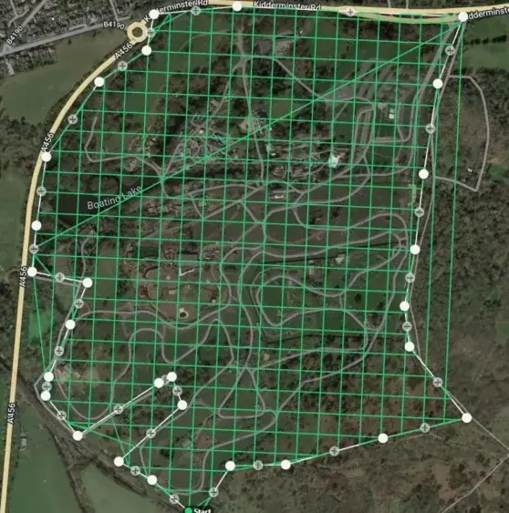

Home / Problems We Solve / Slow land surveys
MappingDrone land survey: map in hours what takes days on foot
Ground surveys are slow, hard over rough terrain, and only capture the points someone walked to.
How does a drone land survey work?
Planning, land records, mining and infrastructure all start with a survey. On foot, large or difficult sites take a team days, and work waits for the results.
A mapping drone flies an automated grid over the site and captures overlapping images or LiDAR data. Software then turns that data into orthomosaics and terrain models.
This matters most on large or difficult sites, where walking the ground is slow and only records the points someone reached. A drone records the whole surface, so you can measure areas you did not think to visit.
Signs you have this problem
- Survey results are holding up planning or design work
- The site is too large, steep or wet to walk easily
- You need a complete surface, not just survey points
- Corridor projects need many days of field work
What to look for
- RTK or PPK positioning for survey-grade accuracy
- Automated grid and corridor mission planning
- LiDAR if you must map ground under vegetation
- Direct export to your GIS or CAD software
The main causes
Size
Large sites and long corridors take many days to cover.
Terrain
Slopes, water and dense ground slow teams and limit access.
Sparse data
A ground survey records points, not the complete surface.
Before and after
How to solve it, step by step
- 1
Plan
Set the grid or corridor mission for the area.
- 2
Fly
The UAV captures images or LiDAR automatically.
- 3
Process
Build orthomosaics and terrain models.
- 4
Deliver
Export to your GIS or CAD workflow.
Common questions
How accurate is a drone survey?
It depends on the sensor, flight height and ground control. RTK or PPK positioning and checkpoints are the usual way to reach survey-grade results.
Photogrammetry or LiDAR: which should I use?
Photogrammetry suits most open sites and gives true colour. LiDAR is better where you need the ground under tree cover. Our mapping guide explains both.
What do I receive from a mapping flight?
Typically orthomosaics, terrain analysis and data ready for your GIS or CAD workflow.
Related problems
Hidden faults in solar plants
A faulty panel can look normal, and checking thousands by hand takes too long.
Read moreLong power lines to inspect
Transmission lines run for kilometres across difficult land, and climbing each tower is slow and risky.
Read moreRisky, slow inspections
Climbing a tower or shutting down an array just to inspect it is slow, costly and dangerous.
Read moreFacing this problem?
Tell us about your mission and our engineers will suggest the right platform or configuration.